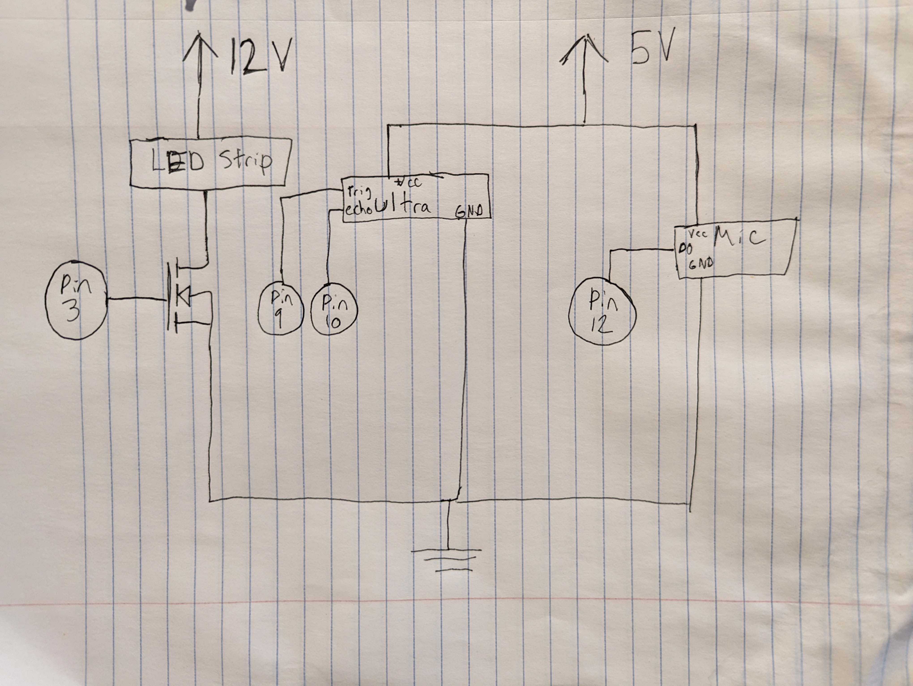
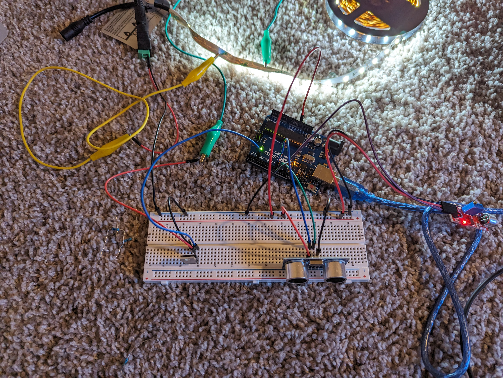
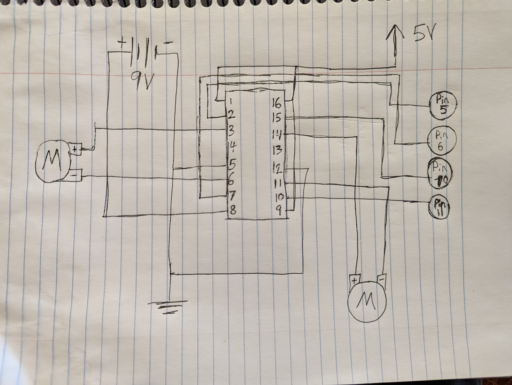

Sam's Assignment 5!

For assignment 5, I made an ultrasonic dimmer for my LED strip. The dimmer can be turned on an off by snapping into a mic.
Code
int trig = 9; // ultra trigger
int echo = 10; // ultra echo
int mosfet = 3; // mosfet control pin
int mic = 12; // mic input pin
float distance = 0; // hand distance (actually measures time for wave to return)
int brightness = 0; // new pwm value
int readings[10] = {0,0,0,0,0,0,0,0,0,0}; // array for average pwm values
int total = 0; // added array values
int brightAvg = 0; // avg. pwm value
bool dimmer = 0; // dimmer, on or off
void setup() {
// put your setup code here, to run once:
pinMode(trig, OUTPUT); // set trigger
pinMode(echo, INPUT); // set echo
pinMode(mosfet, OUTPUT); // set mosfet
pinMode(mic, INPUT); // set mic
}
void loop() {
if(digitalRead(mic) == HIGH){ // opens if mic picks up noise
dimmer = !dimmer; // switches dimmer state
while(digitalRead(mic) == HIGH){ // waits until mic signal dies
}
}
if(dimmer == 1){ // opens if dimmer is on
digitalWrite(trig, LOW); // sets low to avoid bad signal
delayMicroseconds(2); // pause
digitalWrite(trig, HIGH); // sends signal
delayMicroseconds(10); // runs for 10 seconds
digitalWrite(trig, LOW); // ends signal
distance = pulseIn(echo, HIGH); // measure time for signal to return
brightness = map(distance, 400, 4000, 0, 255); // maps distance reading to pwm value
brightness = constrain(brightness, 0, 255); // constrains to pwm value
}
total = brightness; // sets total to last read brightness
for(int i = 0; i <= 9; i++){ // loops trhough array
total = total + readings[i]; // adds array values to total
}
brightAvg = total / 11; // find average pwm value
analogWrite(mosfet, brightAvg); // sets new pwm for mosfet/LEDs
for(int i = 9; i > 0; i--){ // loops all of readings array, except [0]
readings[i] = readings[i-1]; // moves value up one index
}
readings[0] = brightAvg; // adds new pwm to array
}
Schematic

Breadboard

Questions
1: What is the absolute maximum amount of current between pins 2 and 3?.
The link provided didn't work, but I used the datasheet from the slides. The max current at 25 degrees C would be 32 Amps.
2: Draw a schematic for a circuit with using at least your arduino, a DC motor, a flyback diode, and capacitors between power and ground. Find parts with datasheets you could use for each of these schematic components

Capacitor
Diode
3: Draw a schematic using at least your arduino, this chip, and two motors. Write (pseudo) code that shows how you would move the motors both forward, both back, then one forward one back, and one back then forward.

for both motors forward: pins 5 and 10 HIGH, 6 and 11 LOW.
for both backward: 5 and 10 LOW, 6 and 11 HIGH.
for one forward one backward: 5 and 11 HIGH, 6 and 10 LOW.